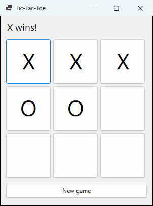

Tutorial 35: A project: Tic-Tac-Toe
A complete game. The lesson is the structure: the state and the rules in plain functions that can be tested, and a thin layer of buttons that shows the state.
What you will learn#
- separating the rules from the window,
- representing a game as data,
- creating controls in a loop,
- testing a game without clicking.
The structure#
| Layer | Contains | Knows about windows? |
|---|---|---|
| State | aBoard (nine cells), cTurn, lOver | no |
| Rules | winnerOf(aBoard), boardFull(aBoard) | no |
| Moves | play(nCell), newGame() | yes: they update the buttons and the status |
| Window | nine buttons, a label, New game | yes |
The rules take the board as a parameter and return an answer. They do not read or write buttons. That makes them easy to test and easy to reuse: the same winnerOf could drive a computer opponent.
The program#
# Tutorial 35: a project - Tic-Tac-Toe (game logic in functions, nine buttons, a status line)
load "dotnet.ring"
using {
"System.Drawing"
"System.Windows.Forms"
}
# THE STATE: nine cells, "" (empty), "X" or "O"; whose turn it is; is the game over
aBoard = ["","","","","","","","",""]
cTurn = "X"
lOver = False
# THE WINDOW
oForm = ""
oStatus = ""
aButtons = []
func main
oForm = uiForm("Tic-Tac-Toe",300,376)
oStatus = uiLabel(oForm,"X to play",10,10,280,26)
oStatus.Font = new Font("Segoe UI",14)
for nCell = 1 to 9
nRow = floor((nCell - 1) / 3)
nColumn = (nCell - 1) % 3
oButton = uiButton(oForm," ",10 + nColumn * 93,46 + nRow * 93,90,90,"play(" + nCell + ")")
oButton.Font = new Font("Segoe UI",32)
aButtons + oButton
next
uiButton(oForm,"New game",10,332,280,30,"newGame()")
uiTest(oForm,"selfTest()")
uiRun(oForm)
uiEnd()
# ---------------------------------------------------------------- THE LOGIC (no window code here: easy to test)
# the winner of a board: "X", "O" or "" when nobody has won; the 8 lines of three cells
func winnerOf aCells
aLines = [[1,2,3],[4,5,6],[7,8,9],[1,4,7],[2,5,8],[3,6,9],[1,5,9],[3,5,7]]
for aLine in aLines
cFirst = aCells[aLine[1]]
if cFirst != "" and cFirst = aCells[aLine[2]] and cFirst = aCells[aLine[3]]
return cFirst
ok
next
return ""
func boardFull aCells
for cCell in aCells
if cCell = ""
return False
ok
next
return True
# ---------------------------------------------------------------- THE GAME: a move changes the state, then the window shows it
func play nCell
if lOver or aBoard[nCell] != ""
return
ok
aBoard[nCell] = cTurn
aButtons[nCell].Text = cTurn
cWinner = winnerOf(aBoard)
if cWinner != ""
oStatus.Text = cWinner + " wins!"
lOver = True
but boardFull(aBoard)
oStatus.Text = "A draw"
lOver = True
else
if cTurn = "X"
cTurn = "O"
else
cTurn = "X"
ok
oStatus.Text = cTurn + " to play"
ok
func newGame
aBoard = ["","","","","","","","",""]
cTurn = "X"
lOver = False
for oButton in aButtons
oButton.Text = " "
next
oStatus.Text = "X to play"
# ---------------------------------------------------------------- THE TESTS: first the logic, then the window
func selfTest
dnAssert("an empty board has no winner",winnerOf(["","","","","","","","",""]),"")
dnAssert("a row",winnerOf(["X","X","X","","O","O","","",""]),"X")
dnAssert("a column",winnerOf(["O","X","","O","X","","O","",""]),"O")
dnAssert("a diagonal",winnerOf(["X","O","","O","X","","","","X"]),"X")
dnAssert("a full board without a winner",boardFull(["X","O","X","X","O","O","O","X","X"]),True)
# a game: X takes the top row while O plays elsewhere
play(1) play(4) play(2) play(5) play(3)
dnAssert("X wins",oStatus.Text,"X wins!")
play(9) # the game is over: ignored
dnAssert("no more moves after the end",aBoard[9],"")
newGame()
dnAssert("a new game",oStatus.Text,"X to play")
play(1) play(2) play(3) play(5) play(4) play(6) play(8) play(7) play(9)
dnAssert("a draw",oStatus.Text,"A draw")
SELFTEST OK (9 checks)How it works#
The board as data#
A list of nine texts, "" for an empty cell, "X" or "O". Cell numbers go 1–9 across and down:
1 2 3
4 5 6
7 8 9The rules#
There are only eight ways to win: three rows, three columns, two diagonals. winnerOf keeps them as a list of eight lists of three cell numbers. For each line it asks: is the first cell not empty, and are the other two the same? The first line where that is true gives the winner. Compare this with eight nested ifs: the data describes the game, the code is short.
Nine buttons in a loop#
for nCell = 1 to 9
nRow = floor((nCell - 1) / 3)
nColumn = (nCell - 1) % 3
oButton = uiButton(oForm," ",10 + nColumn * 93,46 + nRow * 93,90,90,"play(" + nCell + ")")
aButtons + oButton
nextThe position comes from arithmetic: the row is the cell number divided by 3, the column is the remainder. The click code is the text "play(5)", built with the cell number: each button calls play with its own number. The buttons are kept in aButtons so that play can write the X or O into the right one.
A move#
play(nCell) ignores the move when the game is over or the cell is taken. Otherwise it puts the letter into the board and on the button, checks for a winner or a full board, and changes the turn. The status label always tells what happens next.
Testing#
The test first checks the rules with boards made on the spot: an empty board, a row, a column, a diagonal, a full board with no winner. Then it plays games by calling play — X takes the top row, the extra move is refused, newGame resets, and a full game ends in a draw. No mouse involved, and the tests run in a fraction of a second.
What you learned#
- state, rules, moves, window: four layers,
- data that describes the game (the eight lines),
- controls from a loop, with click code built as a text,
- tests that play.
Exercises#
- Highlight the three winning buttons.
- Add a score: how many games X and O have won.
- Write
bestMove(aBoard, cPlayer)for a computer opponent: win if you can, block if you must, otherwise take the centre. - Make the board size 4 × 4 with four in a row.
The TicTacToe application is the full-size version.